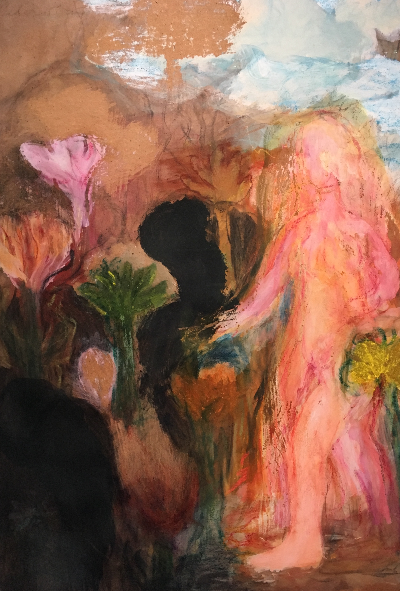
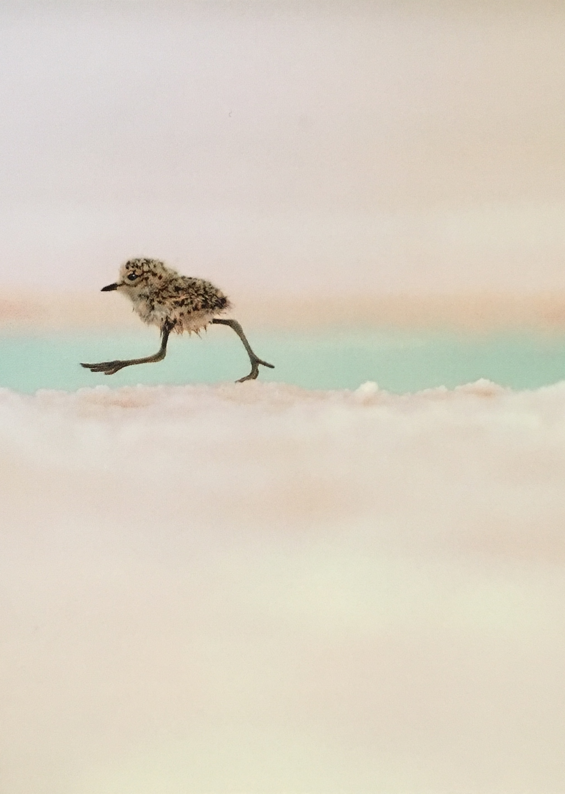
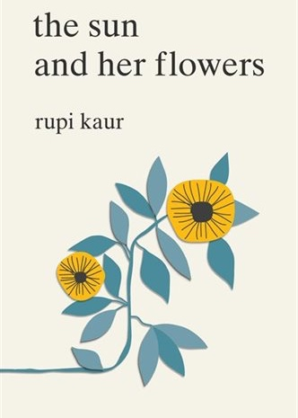
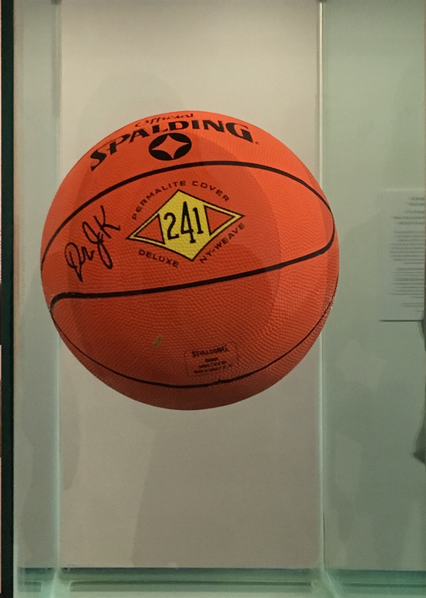

As an intensely cultural crab, I feel it is my duty to impart some of my wisdom to you through a few reviews.

Shown in it’s closest proximity to completeness yet, the 60 piece series of paintings from Ken Kiff’s Sequence at the Sainsbury Centre is well worth the trip... (and was also for me a wonderful excuse to discover the delights of Norwich). Despite his paintings are often unrealistic and illogical, to the point that on first glance they appear almost childish, fusing sensitive application of colour allows them to sing for themselves. The effect of joyful colour palette, combined with his strange, and often slightly unsavoury subject matter emphasises an arresting fusion of various juxtapositions the beautiful and ugly, the fantastical and everyday banality.
Ken Kiff: The Sequence • Sainsbury Centre • 17th November – Sunday 21st April

Whether you are a wildlife fanatic or not, there is so much to gain from this show. ‘Wildlife Photographer of the Year’ is a stunning exhibition..., made more so by its considered combination of image with word. Photographs that are captivating in their own right are made all the more powerful by the stories written below, which give insight into the wildlife, and the phenomenal effort and length taken to capture each picture. Particularly poignant is Adrian Bliss’s fox, quiet in the midst of Chernobyl’s rubble, which since its human abandonment has become a thriving habitat for Ukrainian wildlife. Photo-journalism shots document still deeper stories; painful snapshots of exploitation show a tiger debilitated by poaching, a sun bear crying from its cage, a monkey trapped in a circus which continues to go on. These are interspersed with more hopeful portraits, like of Bob the flamingo spreading the message for conservation on national television, and soothing rescued flamingos to aid their rehabilitation. With each photograph, you see the power and the intricacy of nature, and are made to feel first hand the devastating effect that our impact has had on it. A lot is told and a lot can be learned. You come away with with a greater understanding of the animal world, and the time, skill and passion that goes into capturing it. There is a real sense of the passion behind the lens being shared, and I left feeling strangely uplifted, and enlivened by the thought of the opportunity that this exhibitions brings; for so many people to be made aware of these stories which are lesser known; to be moved by that which is not so often told; and hopefully to feel some connection, and desire to conserve these places from which they are so far removed.
Wildlife Photographer of the Year • Natural History Museum • on ‘til 30th June

Dorothea Tanning • Tate Modern • 27 February – June 2019

Rupi Kaur’s done it! She writes poems for everyone- even those that think they don’t like poetry...!
Beautifully framed within her central message that people must 'fall, root, rise, in order to bloom' Kaur’s collection movingly narrates a journey from grief and abjection to love and empowerment. Kaur combines simple illustrations with economically written passages, whose fragmentary nature resemble the thought patterns of their powerfully singular voice. Un-punctuated, uncapitalised and unassuming on the page, her words resound with a weighty rawness, confronting emotionally difficult traumas and setbacks with sensitivity and acceptance. Comfortingly honest and beautifully uplifting, this IS a must read.
The Sun and Her Flowers • Rupi Kaur

In the Company of • TJ Boulting • 16th September - 7th November.

I went to this exhibition with reservation. ...The giant of the art money world, Jeff Koon’s works seemed to me to be nothing more than ginourmously oversized and garishly kitsch. However, as this exhibition reveals, as a conceptual artist Koons excels, with his thinking is interesting and extensive. Koons’ ability to create art which is in dialogue with art history, which manages to connect highly intelligent and philosophical ideas, with creations which invite a very basic sensory enjoyment makes him perhaps one of the most democratic artists of our day.